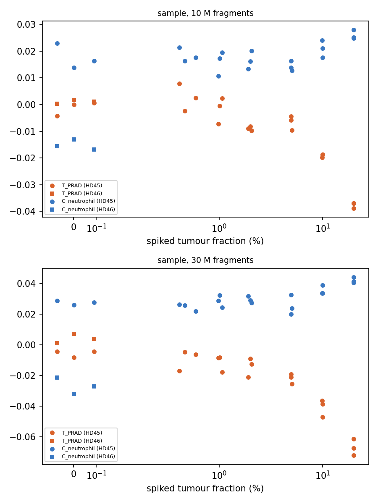
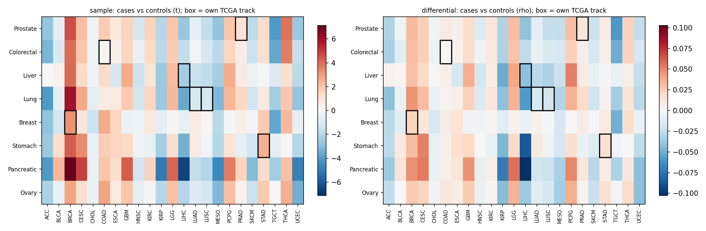

Benchmarks (v0.2.0, 2026-11-05)
Benchmarks with known or expected answers, run with the tumor or glioma panel (layers C + T), modes sample and differential (sets was removed in 0.2.0; see method). Each run folder also has ranked_<effect>.png bar plots of every track. Scripts are in benchmarks/;
result tables in benchmarks/results/.
1. PRAD in-silico mixtures (hg19): does the method find tumour DNA, and how little?
Design. Fragments from a prostate cancer plasma sample (PRAD_14230, ichorCNA tumour fraction 46.5%) mixed into a healthy person's plasma (HD45) at 0, 0.5, 1, 2, 5, 10 and 20% tumour fraction; 10 M and 30 M fragments; 3 replicates each. A second healthy person (HD46) at 0% shows person-to-person variation. Detection = all 3 replicates beyond every unspiked sample (HD45 and HD46) at that depth. All files hg19 (native build of C and T).

| Depth | Mode | Spearman, T_PRAD vs tumour fraction | Rank of T_PRAD by |rho| among all 101 tracks | Detection limit |
|---|---|---|---|---|
| 10 M | sample | −0.88 | 1 | 2% |
| 30 M | sample | −0.94 | 1 | 2% |
- T_PRAD is the most tumour-fraction-responsive of all 101 tracks (TCGA, ENCODE tissues and cell types, groups) at both depths.
- Direction: more tumour DNA lowers coverage at the tumour's specific open regions (negative score). Read tumour tracks this way: lower = more tumour-derived signal.
- The removed
setsmode (top-1,000 bins) had detection limits of 20% (10 M) and 5% (30 M). - Caveat: the null has only two healthy people. The earlier benchmark with four people showed that person-to-person variation, not depth, sets the floor, so real-world limits will be higher than 2%.
Differential mode on the mixtures (spiked ≥ 5% vs unspiked, 9 vs 6 samples per depth):
| Depth | All-bins rho for T_PRAD (rank among all 101 tracks) | p | Top-2,000 "down" bins: T_PRAD specificity rank among 23 TCGA tracks | p |
|---|---|---|---|---|
| 10 M | −0.044 (most negative, 1st) | 0.005 | 1st of 23 | 0.015 |
| 30 M | −0.076 (1st) | < 0.005 | 1st of 23 | < 0.005 |
Differential mode recovers the tumour type too: bins that lose coverage with tumour DNA are the most PRAD-specific.
2. Cabat pan-cancer cohort (hg38): does each cancer light up its own track?
Design. 139 cases (pancreatic 28, lung 23, breast 22, prostate 21, colorectal 18, ovary 12, liver 8, stomach 7) and 139 matched controls, QC-pass. Each cancer type vs all controls, adjusted for batch and sex; own TCGA track as primary (pancreas / ovary have no TCGA track, so the ENCODE tissue was used). ichorCNA tumour fractions are mostly below ~3%.

| Cancer | Own track | sample t (p) | differential rho (p) | Spearman of sample score with ichorCNA TF (cases) |
|---|---|---|---|---|
| Breast | T_BRCA | 3.18 (0.002), rank 1/23 | 0.023 (<0.001), rank 1/23 | −0.30 (p 0.18) |
| Stomach | T_STAD | 2.61 (0.012), rank 3/23 | 0.017 (0.03) | −0.18 (p 0.70, n 7) |
| Liver | T_LIHC | −2.49 (0.017) | −0.043 (0.01) | 0.55 (p 0.16, n 8) |
| Prostate | T_PRAD | 1.07 (0.28) | 0.013 (0.23) | −0.06 (p 0.80) |
| Colorectal | T_COAD | 0.21 (0.83) | 0.001 (0.84) | −0.17 (p 0.50) |
| Lung | T_LUSC / T_LUAD | −1.23 / −1.13 | n.s. | 0.13 / 0.18 |
| Pancreatic | C_pancreas | −0.83 | n.s. | 0.01 |
| Ovary | C_ovary | −3.93 (<0.001) | −0.086 (<0.001) | −0.22 (p 0.48) |
- No diagonal. Most cancer types share the same pattern of TCGA tracks (see the matrix rows), so the main case-vs-control difference in this cohort is common to all cancers, not tumour-type specific. At ichorCNA fractions of ~1–3%, tumour-specific DNA is near the detection limit found in benchmark 1.
- Direction matters. Benchmark 1 shows tumour DNA lowers the own-track score. Own-track changes in that direction: liver (T_LIHC, sample t −2.49, p 0.017; differential p 0.01) and ovary (C_ovary, negative in all three modes, p < 0.001). Breast (T_BRCA) and stomach (T_STAD) are significant in the opposite direction, so they are not tumour-derived signal; they follow the shared case/control shift.
- No dose-response with ichorCNA tumour fraction within cases. The own-track sample score is negative (the
tumour direction) in 5 of 8 cancer types, but none is significant. (The removed
setsmode had shown significant correlations for stomach and lung; they do not hold in the all-bins score.) At ichorCNA fractions of ~1–3% the tumour signal is below what this cohort can resolve. - The shared pattern needs follow-up before biological interpretation: cases and controls may differ in collection era or processing, which no covariate here captures.
Immune and blood tracks (ENCODE layer) in Cabat
| Track | Cases vs controls | Strongest (permutation p < 0.05) |
|---|---|---|
| B, NK, CD4 T, CD8 T, myeloid progenitor, spleen, thymus | lower in 94–100% of cancer type × mode tests | prostate (all, sample; B, NK, progenitor, spleen, thymus also differential), pancreatic (B, NK, progenitor, spleen, thymus), colorectal and lung (progenitor, spleen, thymus) |
| Neutrophil | lower (88%) | prostate (both modes), pancreatic and colorectal (sample) |
| Monocyte | slightly higher | stomach (sample t = 2.24) |
With the mixture-benchmark direction (more DNA from a cell type lowers coverage at its specific bins), cancer
plasma in this cohort carries relatively more blood-cell-derived cfDNA, especially lymphoid and progenitor, than
controls. This matches the shared, non-tumour-specific case/control shift seen on the TCGA tracks. Collection or
processing differences between cases and controls could produce the same pattern. Table:
benchmarks/results/cabat_immune_tracks.csv.
3. GBM cohorts (hg38, one library batch each)
| Comparison | Panel | n | Result |
|---|---|---|---|
| GBM (IDH-wt) vs schwannoma | glioma | 20 vs 16 | No glioma or CNS track significant in any mode (T_GBM sample t −0.03, p 0.97). Neutrophil lower in GBM (differential rho −0.087, p 0.04; q 0.36). |
| Metastatic breast vs schwannoma | tumor | 10 vs 16 | T_BRCA lower in the expected (tumour) direction in all modes, strongest in sample mode (t −1.80, p 0.08, rank 4/23); not significant at this n. Monocyte-specific bins over-represented among bins losing coverage (top-bin p 0.035). |
| Progression vs pseudo-progression | glioma | 5 vs 5 | Nothing significant (all q ≥ 0.84). |
GBM releases little tumour DNA into plasma, so the absence of a glioma signal is expected at these sizes; the method does not invent one. The metastatic breast comparison points the right way but needs more samples.
4. Null calibration (Cabat controls, random labels)
| Mode | Runs | Mean share of tracks at p < 0.05 | Max in one run |
|---|---|---|---|
| sample | 10 | 5.0% | 16.8% |
| differential | 3 | 0.3% | 1.0% |
On average the per-sample modes are calibrated (~5%). Single runs can show many tracks at once because tracks are correlated (one chance shift moves related tissues together); use the q-values and the primary-track correction. Differential mode is conservative.
Take-aways
- The method recovers tumour-type-specific signal when tumour DNA is ≥ 2%, in both modes (
sampleper sample;differentialat the group level), and the tumour track is the top responder among all 101 tracks. - Tumour tracks go down with more tumour DNA; a significant change in the other direction is not tumour signal.
- In low-fraction real cohorts, expect shared, non-specific case/control shifts; pre-register tracks and check dose-response with an independent tumour-fraction estimate (ichorCNA) before interpreting.